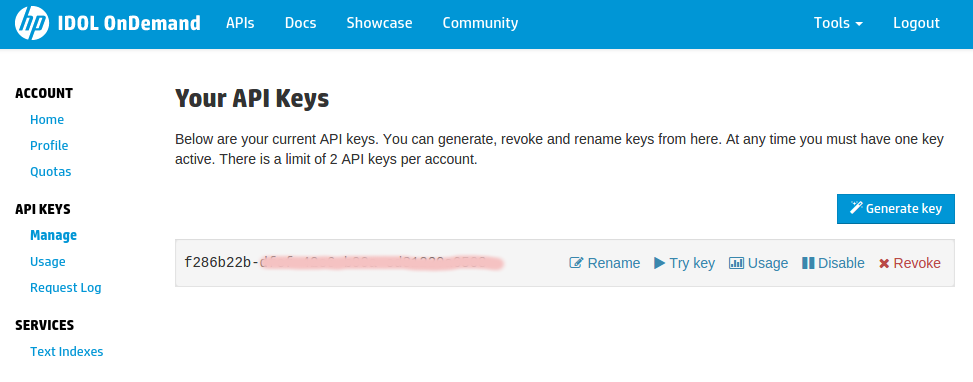
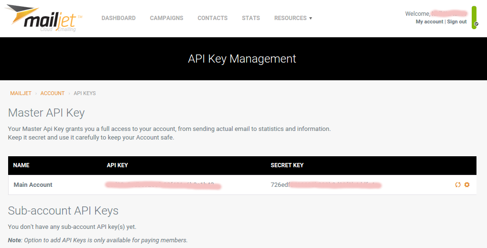
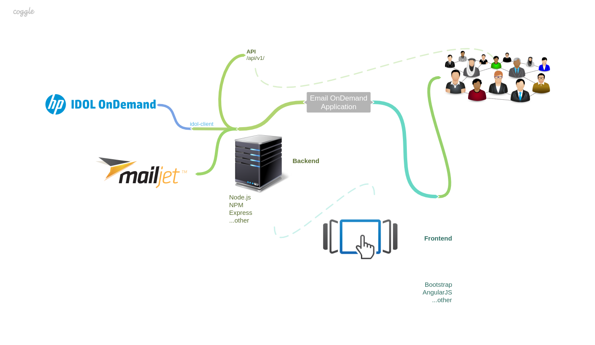
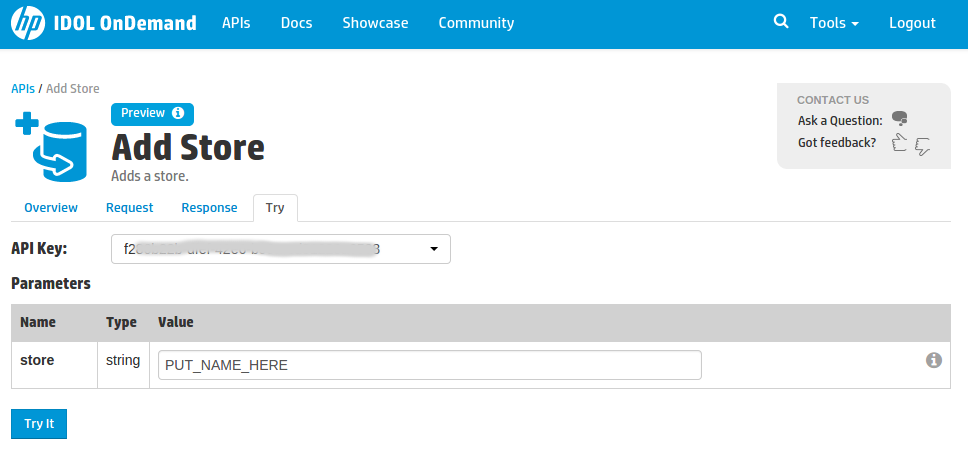
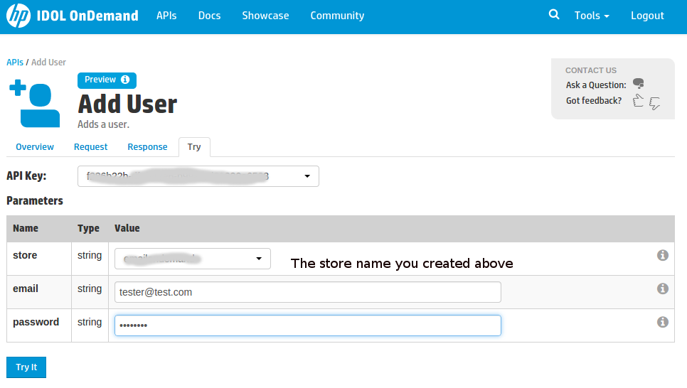
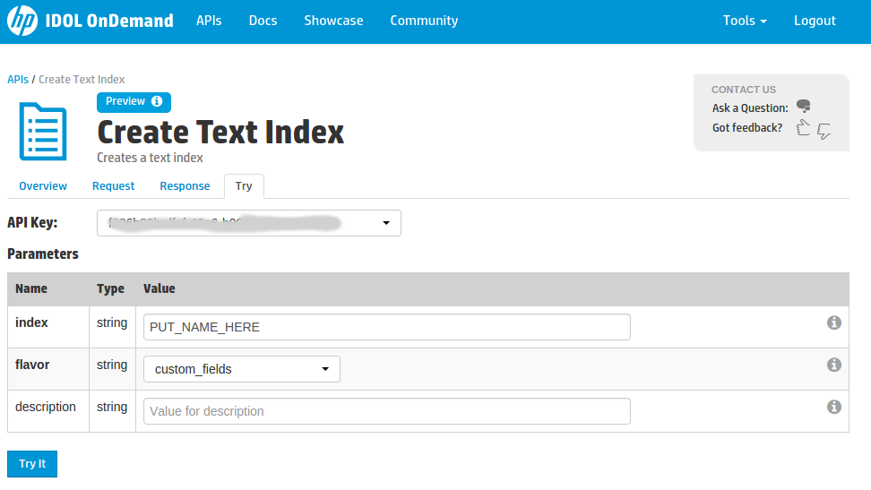
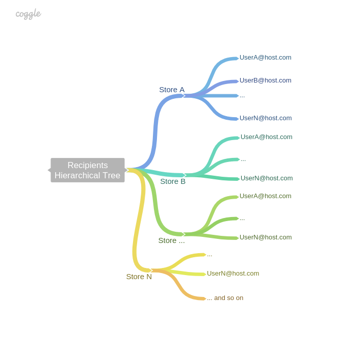

By kiri4a February 20, 2015
Kiri4a wrote this blog post as part of a winning submission to a topcoder challenge. For more information on IDOL OnDemand topcoder challenges head to idolondemand.topcoder.com
The following article demonstrates how to integrate some of the available HP IDOL OnDemand APIs with the Mailjet API to create and host powerful standalone email system for your IDOL accounts. Additionally it provides a screen sharing video describing the web UI features, basic design and API usage.
Communication is critical for any business, organisation and individual in the days of the fast changing global world. Thus being able to contact your users in a flexible, reliable and fast way is key to success. As an owner, manager or developer, you want to rely upon a solution that offers such capabilities and is easy to use, setup and support.
With HP IDOL OnDemand, Mailjet and some coding we will implement such system, setup the system and host it publicly on the Internet. Now, when we know what we are after, let’s define the specification for this system.
Let's begin with simple requirement - the system needs to be able to send emails to any user and/or any store or role of users available in IDOL OnDemand User Management for particular account. Also needs to be capable to authenticate who is currently using it, provide easy to use GUI for the end user and preferably programmatic access to its services. Last but not least the system has to be able to operate as Software as a service (SaaS) to enable the business to reallocate IT operations costs away from hardware/software spending and personnel expenses, towards meeting other goals.
The nature of the application we are creating demand communication with public APIs in programmatic way in the back-end and ability to serve the application with its services to the end user. There are many ways to achieve this with different languages and frameworks but the author's preference favorite JavaScript and Node.js usage. Among other concerns such stack wins because it offers access to the rich of open source packages NPM community and the wide support of Node.js in many operational systems and even PaaS providers like Heroku or OpenShift. Additionally via NPM there is an IDOL OnDemand REST client JS library available we are going to use to get a "flight start" and not to invent the wheel here.
For the front-end we will use the Express framework to serve our app and API. Write the views in Jade, style them with Bootstrap and provide rich interaction with AngularJS. With this stack we achieve app availability for mobile, tablet and desktop devices.
As annotated in the introduction we will use HP IDOL Ondemand API and Mailjet API for the implementation. Thus we will need valid accounts to work with the APIs. Currently we can register such ones for free Sign up to IDOL OnDemand and Sign up to Mailjet.
After the successful registration with IDOL OnDemand, sign in and navigate to API Keys > Manage page to generate a new key. You should see something to the screen bellow:

After the successful registration with Mailjet, sign in and navigate to API Key Management. You should see something to the screen bellow:

The stack chosen in previous section demand Node.JS and NPM to be available on the system where we run/host the application.
The mind map bellow gives basic visual representation of the topology of the application.

As we see above, we will implement the application in the back-end on the server. It will then provide rich UI to the end user (Frontend) and expose REST API for programmatic access too. Internally the application will communicate with IDOL OnDemand API and Mailjet API.
Such setup allows us to "play safe" and never expose the API keys we use internally to the client side. To add more on security we will serve the app via SSL. Additionally we are able to apply flexible user policy of who is allowed to use the system and etc.
This chapter describes the technical aspect of the programming and dives deeper into the application internals. Let's first discuss the APIs we are going to use and explain why.
According our specification we want to send emails via Mailjet to our users managed by IDOL OnDemand. More we would like to provide some sugar to the end user such as extracting text from files, references and urls and using it as email content. Additionally we want to index the emails we send in a text index to be able to offer search capabilities to the end user on request. Last but not least provide history and statistics of the sent emails. All those plans demand interaction between following 6 APIs:

Next let's create some user[s] in this store. Repeat the step as many times as needed.


We will depend on some NPM packages to not reinvent the wheel here but focus on the important implementation of our application. Here is how our NPM's package.json file, found in the root of the project folder looks like:
{
"name": "emailondemand",
"version": "0.1.0",
"description": "Email services for IDOL OnDemand.",
"main": "./src/server.js",
"scripts": {
"start": "node ./src/server.js"
},
"author": "TCCODER",
"license": "MIT",
"dependencies": {
"body-parser": "^1.11.0",
"cors": "^2.5.3",
"dotenv": "^0.5.1",
"express": "^4.11.2",
"express-session": "^1.10.2",
"helmet": "^0.6.0",
"heroku-ssl-redirect": "0.0.2",
"idol-client": "^0.2.1",
"jade": "^1.9.2",
"lodash": "^3.2.0",
"multer": "^0.1.7",
"superagent": "visionmedia/superagent",
"winston": "^0.9.0"
},
"devDependencies": {}
}
To note here is that we define the "npm start" script command which we can use to start the app when needed. Most of the packages are Express related. Those not related are "idol-client" - used to communicate with IDOL OnDemand, "superagent" - used to talk to Mailjet APIs and "winston" - used for logging purposes.
We are not going to go over every file in the source code as this would burden the blog post. The code is heavy and well commented so use it to comprehend the parts of interest.
More interesting are the 2 classes (Email.js and Recipients.js) implemented in the solution.
Recipients.js - is responsible for organizing the existing stores and users of the IDOL's User Management system in hierarchical tree. This is important and allows the application to be able to send emails to single, multiple users or to any user in a store. Internally this class uses cached requests/responses to minimize the load on the IDOL's API and preserve account quota but provide purge method to refresh the cache.
The following sketch represents the structure of the tree.
Here is to note that we do not take into consideration the Role APIs provided by IDOL OnDemand. This is because currently there is no way available for us to query the IDOL APIs and answer questions like:
The author has opened a discussion in the IDOL community here with the hope that at some point soon there will be such APIs. When we have the way to query roles we would be able to represent another abstraction layer to our recipients hierarchical tree. Our app will benefit a lot from such functionality. We could have admins, senders and etc user in our store and based on those roles serve different UI to the end user. That is why the "Manage" tab is currently disabled for all user. It is there just as future option...
Email.js - will wrap our calls to Mailjet to provide `send()` and `history()` methods. Also implement `search()` which can query the indexed sent emails via IDOL OnDemand.
To allow any external application to integrate with our project we will expose public REST API under the `/api/v1/` endpoints. It is better described by the appropriate way here.
Enoght talking, right? Let's see how our application looks like and behaves. The following video will help us:
We have presented a solution in which we connect different APIs from various providers into purpose. With the help of those APIs and our coding powerful web app and API service useful for any kind of business, organisation and individual is born to life. It is a flexible email solution with easy to use extras, separated as standalone service, suitable for any IDOL OnDemand account. Aallows a business the potential to reduce IT operational costs by outsourcing hardware and software maintenance and support to the cloud. Just deploy, setup and host it to have emails going.